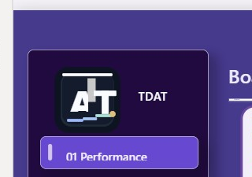

Signature QA

- Source asset:
assets/favicon.svg - PBIX target:
output/dashboard_final.pbix - Implementation: native shapes/text, no image visual placeholder.
- Required text:
TDATpresent.
Power BI Desktop Crop

Expected: full logo visible beside TDAT, with no vertical or horizontal scrollbar in the signature area.